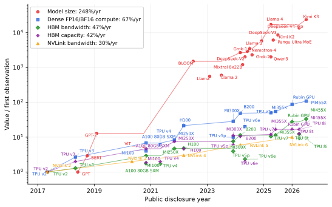
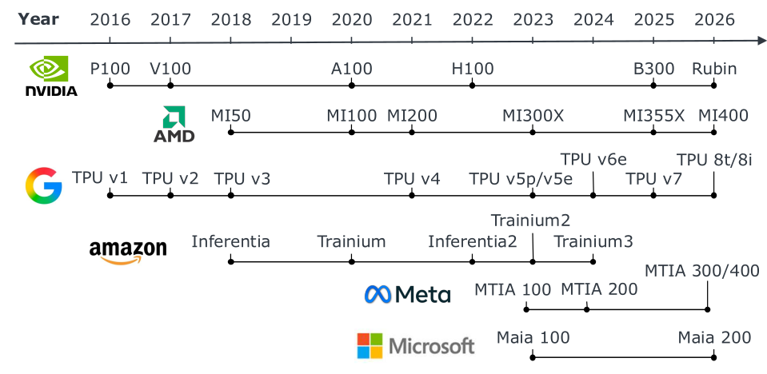

Context, Scope, and Evidence Standards
4.1.2AI Datacenter Context and Four Categories of Resource Pressure#
Progress in AI has stopped being only an algorithms story. Nearly 90% of notable AI models in 2024 came from industry, up from 60% in 2023, and the training compute behind frontier models has been doubling roughly every five months [1]; one estimate puts the growth at about 5× per year since 2020 [2]. Capability is now coupled to whether an organization can provision and operate large infrastructure, not to single-processor speed.
That demand has made energy a first-order architectural constraint rather than a facilities detail. The International Energy Agency puts global datacenter electricity use at roughly 415 TWh in 2024 and projects it could more than double to about 945 TWh by 2030, with AI a major driver [3]. In the United States, Lawrence Berkeley National Laboratory reports datacenters at about 4.4% of total electricity consumption in 2023, projected to reach 6.7–12% by 2028 [4].
The deeper problem is not that any one resource is scarce — it is that the resources are growing at very different rates.

Across the selected observations, total model parameter counts grow at an endpoint annualized rate of roughly 248% per year [5, 6]. Per-accelerator dense FP16/BF16 compute follows at about 67%. HBM bandwidth and capacity trail at roughly 47% and 42%, and scale-up interconnect bandwidth is slowest at about 30%. The comparison is directional rather than a claim that every model or device generation follows the same curve: model size can outpace compute, while memory and communication improve more slowly than arithmetic throughput. Independent analyses of the "memory wall" report the same pressure [7].
This is why an accelerator cannot be judged by its arithmetic throughput. Four pressures — compute, memory capacity, memory and interconnect bandwidth, and power — tighten at different speeds, and a design that relieves one often intensifies another. Specialized matrix engines and low-precision arithmetic raise compute efficiency; higher memory bandwidth and greater on-chip reuse cut trips to external memory; fast interconnects let model state span many devices. Because each mechanism targets a different bottleneck, architectures differ mainly in which pressure they chose to relieve first.

Alongside continued GPU development, cloud and platform providers began building accelerators for the services they operate. Google disclosed its TPU in 2016 [8], AWS announced Inferentia in 2018 [9], and Meta and Microsoft introduced MTIA and Maia in 2023 [10, 11].
These accelerators encode different objectives. NVIDIA and AMD datacenter GPUs are programmable platforms spanning a broad range of training and inference work, pairing specialized matrix computation with general-purpose parallel execution [12, 13]. In-house accelerators are usually tailored to their owner's own models, service requirements and cost structure. AWS built Inferentia to cut inference cost at high throughput and low latency, then Trainium for training [9, 14]. Google's first TPU targeted inference, with v2 and v3 extending the family to training [15]; more recently TPU 8t emphasizes large-scale pre-training while TPU 8i targets post-training and latency-sensitive serving [16].
Workloads shift across generations too. Meta's MTIA 100 and 200 focused on ranking and recommendation inference [10, 17]; MTIA 300 extends to recommendation training and MTIA 400 broadens to generative AI while keeping recommendation [18]. Microsoft's Maia 100 arrived for cloud AI training and inference, whereas Maia 200 targets the cost of token generation during inference [11, 19].
References
- 1.Stanford Institute for Human-Centered Artificial Intelligence. The 2025 AI Index Report. https://hai.stanford.edu/ai-index/2025-ai-index-report, 2025. Accessed: 2026-05-31.
- 2.Epoch AI. Data on AI Trends: Compute, Models, Hardware. https://epoch.ai/trends, 2025. Accessed: 2026-09-13.
- 3.International Energy Agency. Energy and AI. https://www.iea.org/reports/energy-and-ai/executive-summary, 2025. Executive Summary; accessed 2026-05-31.
- 4.Arman Shehabi et al. 2024 U.S. Data Center Energy Usage Report. https://newscenter.lbl.gov/2025/01/15/berkeley-lab-report-evaluates-increase-in-electricity-demand-from-data-centers/, 2024. Released January 2025.
- 5.DeepSeek-AI. DeepSeek V4 Preview Release. 2026.
- 6.Moonshot AI. Kimi K3: Open Frontier Intelligence. 2026.
- 7.Amir Gholami et al. AI and Memory Wall. IEEE Micro, 2024.
- 8.Google. Google Supercharges Machine Learning Tasks with Custom Chip. 2016.
- 9.Amazon Web Services. Announcing Amazon Inferentia: A Machine Learning Inference Microchip. 2018.
- 10.Amin Firoozshahian et al. Mtia: First generation silicon targeting meta's recommendation systems. Proceedings of the 50th Annual International Symposium on Computer Architecture, 2023.
- 11.Microsoft. Microsoft Ignite 2023: AI Transformation and the Technology Driving Change. 2023.
- 12.NVIDIA. NVIDIA A100 Tensor Core GPU Architecture. 2020.
- 13.Alan Smith and Vamsi Krishna Alla. AMD Instinct™ MI300X: A Generative AI Accelerator and Platform Architecture. IEEE Micro, 2025.
- 14.Jeff Barr. re:Invent 2020 Liveblog: Andy Jassy Keynote. 2020.
- 15.Thomas Norrie et al. The design process for Google's training chips: TPUv2 and TPUv3. IEEE Micro, 2021.
- 16.Google Cloud. Inside the eighth-generation TPU: An architecture deep dive. 2026.
- 17.Joel Coburn et al. Meta's Second Generation AI Chip: Model-Chip Co-Design and Productionization Experiences. Proceedings of the 52nd Annual International Symposium on Computer Architecture, 2025.
- 18.Yee Jiun Song et al. Four MTIA Chips in Two Years: Scaling AI Experiences for Billions. 2026.
- 19.Scott Guthrie. Maia 200: The AI Accelerator Built for Inference. 2026.